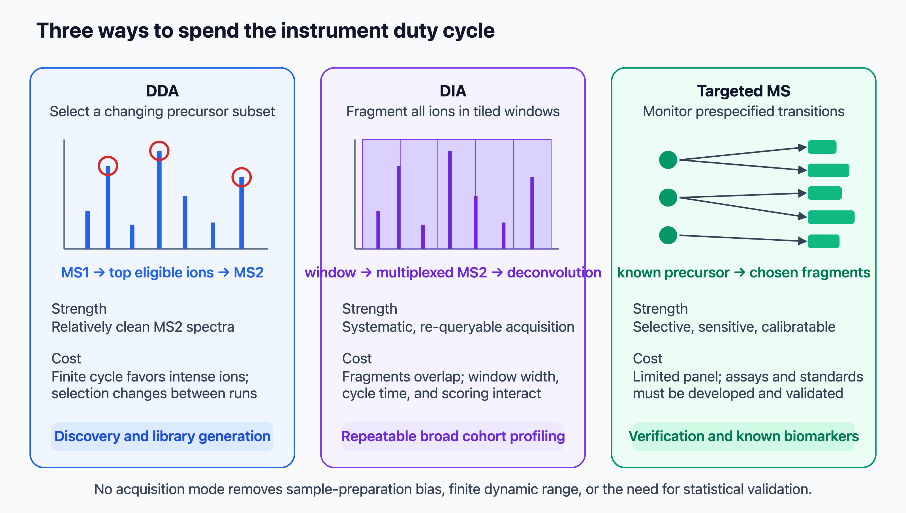
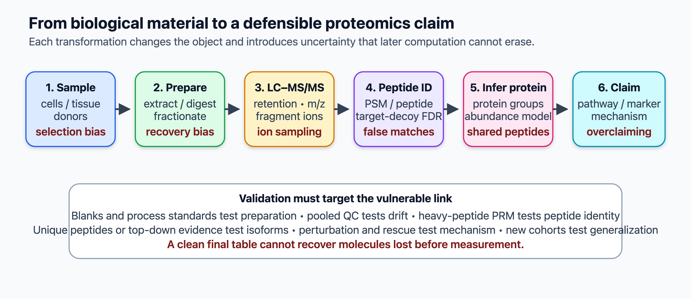
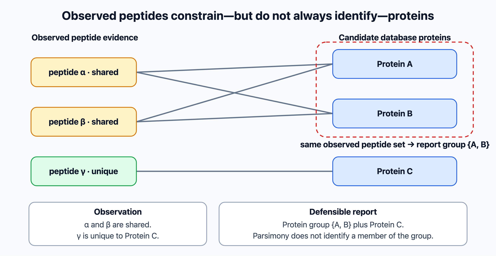

8 Proteomics
Different proteomics methods. How are these used, algorithms.
8.1 Overview
Proteomics is the large-scale study of proteins: their identity, abundance, modifications, interactions, structures and locations. It is a broad field, built mainly on mass spectrometry, with its own instruments, algorithms and statistics. The chapter follows a protein sample from the instrument to a biological conclusion:
- mass spectrometry: history, instruments, bottom-up and top-down proteomics, fragmentation, acquisition strategies (DDA, DIA, targeted) quantification, experimental design and quality control (Section 8.2);
- algorithms for peptide identification: database search, spectral libraries, de novo sequencing with deep learning, and the prediction of spectra and retention times (Section 8.3);
- statistics: the target–decoy approach, Percolator, the protein inference problem, error control at different levels, normalisation, missing values and differential abundance (Section 8.4);
- beyond abundance: post-translational modifications, interaction proteomics and hu.MAP, structural MS and spatial proteomics (Section 8.5);
- proteomics without MS: antibody-based proteomics and the Human Protein Atlas, affinity proteomics, multiplexed imaging, protein sequencing and orthogonal validation (Section 8.6);
- repositories, standards and the Human Proteome Project (Section 8.7).
8.2 Mass spectrometry methods
Proteomics studies the proteins themselves: which ones are present, how abundant they are, how they are modified, where they are and whom they interact with. mRNA levels predict protein levels only partly (Section 7.5), and many regulatory events, such as phosphorylation, cleavage and complex formation, happen only at the protein level. Most of proteomics is based on mass spectrometry (MS) (Aebersold and Mann 2003, 2016). This section describes the instruments and the experimental strategies; methods that do not use MS are described in Section 8.6.
8.2.1 History
Mass spectrometry measures the mass-to-charge ratio (\(m/z\)) of ions. It was developed in the early twentieth century for atoms and small molecules, but proteins could not be analysed, because they could not be brought into the gas phase as intact ions. Proteomics before MS relied on two-dimensional gel electrophoresis, introduced by Patrick O’Farrell in 1975, which separates thousands of proteins by isoelectric point and size (O’Farrell 1975). Spots could be cut out and identified by Edman degradation, which reads the N-terminal sequence one residue per cycle, slowly and one protein at a time.
Two “soft” ionisation methods, published in 1988–1989, changed this:
- Electrospray ionisation (ESI): a solution is sprayed from a fine needle at high voltage, the droplets evaporate, and multiply charged ions of large molecules are released into the gas phase (Fenn et al. 1989). ESI works directly on the output of liquid chromatography.
- Matrix-assisted laser desorption/ionisation (MALDI): the sample is mixed with a matrix that absorbs laser light and releases mostly singly charged ions (Karas and Hillenkamp 1988; Tanaka et al. 1988).
John Fenn and Koichi Tanaka shared the 2002 Nobel Prize in Chemistry for these methods. In 1993 several groups showed that a protein could be identified by digesting it, measuring the masses of the peptides and comparing them with the masses predicted from a sequence database. This is peptide mass fingerprinting (Henzel et al. 1993). MALDI gives mostly singly charged ions, so the measured \(m/z\) gives the peptide mass almost directly. Combined with the first complete genomes, which provided the databases, this started modern proteomics. The term proteome was coined in 1994 (Wilkins et al. 1996).
8.2.2 Instruments
A mass spectrometer has an ion source, one or more mass analysers, which separate ions by \(m/z\), and a detector. The main analysers differ in resolution, mass accuracy, speed and sensitivity:
- Quadrupoles filter ions with oscillating electric fields, letting only a chosen \(m/z\) through. They are robust and fast but have low resolution, and are used as filters and in targeted experiments.
- Ion traps store ions and eject them in order of \(m/z\). They are sensitive and fast, but have limited resolution.
- Time-of-flight (TOF) analysers accelerate ions and measure how long they take to reach the detector; ions with lower \(m/z\) arrive first. TOF is fast and has, in principle, no upper \(m/z\) limit. MALDI-TOF instruments are used for peptide mass fingerprinting and, in clinics, to identify bacteria.
- Fourier-transform analysers measure the frequency at which trapped ions oscillate, which depends on \(m/z\). Fourier-transform ion cyclotron resonance (FT-ICR) instruments use a strong magnet and give the highest resolution. The Orbitrap, invented by Alexander Makarov, traps ions in an electrostatic field around a central electrode and achieves very high resolution and mass accuracy (a few parts per million) without a magnet (Makarov 2000; Hu et al. 2005). Orbitrap instruments have dominated proteomics since the late 2000s.
Hybrid instruments combine analysers: a quadrupole selects precursor ions, which are fragmented in a collision cell and analysed in a TOF (Q-TOF) or an Orbitrap (Q-Orbitrap). Recent instruments add ion mobility, which separates ions by how fast they drift through a gas in an electric field. The drift depends on their charge and on their size and shape (the collisional cross section). Ion mobility adds a separation dimension between LC and \(m/z\), and can separate co-eluting peptides of similar \(m/z\). In the timsTOF, ions are accumulated in a trapped ion mobility spectrometry (TIMS) device and released in order of mobility. The quadrupole is switched in step with this release, so that several precursors are selected for fragmentation within one mobility scan, which multiplies the rate of MS2 spectra (parallel accumulation–serial fragmentation, PASEF) (Meier et al. 2018). The same principle is used with DIA windows (dia-PASEF) (Meier et al. 2020).
The instrument never measures mass directly, only \(m/z\). ESI produces peptide ions with one or more charges: a peptide of neutral mass \(M\) that has taken up \(z\) protons appears at \(m/z = (M + z \cdot 1.007)/z\), where 1.007 Da is the mass of a proton. Each ion also appears as an isotope envelope, a series of peaks separated by \(1/z\) caused by the natural abundance of \(^{13}\)C. High resolution matters because the spacing of the resolved envelope gives the charge state, and only then can the neutral monoisotopic mass be calculated from the measured \(m/z\) (charge-state deconvolution). This mass is what constrains the possible peptides. When this book speaks of the “mass” of a precursor or a peptide, it means the neutral mass inferred in this way.
8.2.3 Bottom-up and top-down proteomics
In bottom-up (shotgun) proteomics, proteins are digested into peptides, usually with trypsin, which cuts after lysine and arginine. The peptide mixture is separated by reversed-phase liquid chromatography (LC) coupled online to the mass spectrometer. As peptides elute, the instrument records a survey scan of intact peptide ions (MS1), selects precursor ions, fragments them and records the fragment spectra (MS2). This is tandem mass spectrometry (LC-MS/MS). Peptides are easier to separate, ionise and fragment than whole proteins. Depth came from combining digestion with multidimensional chromatography, as in the MudPIT analysis of the yeast proteome (Washburn et al. 2001). The price is that the connection between a peptide and the protein it came from is lost, which leads to the protein inference problem (Section 8.4).
In top-down proteomics, intact proteins are measured and fragmented. This preserves the full proteoform, the exact combination of sequence variants, splice isoform and modifications of each molecule, but it is technically much harder, especially for large proteins (Toby et al. 2016). Separation, charge-state deconvolution and fragmentation all become harder as the mass of the protein grows. Large-scale top-down studies have shown that the products of one gene often appear as several distinct intact proteoforms (Tran et al. 2011). Top-down is therefore not simply a better form of bottom-up proteomics: it trades depth and throughput for molecular resolution.
The difference matters for interpretation. Digestion breaks the link between modifications on different peptides, so observing a phosphorylated peptide and an acetylated peptide from the same gene does not show that both modifications occur on the same molecule. A tryptic peptide can support a gene-level protein group, but it rarely establishes the intact proteoform. Middle-down proteomics, which analyses longer peptides produced by less frequently cutting proteases, lies in between. It keeps more information on which modifications co-occur, for example on histone tails, and is easier than the analysis of intact proteins.
8.2.4 Fragmentation and b- and y-ions
The sequence information comes from fragmenting the precursor. The most common methods, collision-induced dissociation (CID) and its beam-type variant, higher-energy collisional dissociation (HCD), collide peptide ions with gas molecules. The peptide breaks mainly at the amide bonds of the backbone. If the charge stays on the N-terminal fragment it is a b-ion; if it stays on the C-terminal fragment it is a y-ion. A complete series of b-ions (or y-ions) forms a ladder in which the mass difference between consecutive peaks equals the mass of one amino acid residue, so the sequence can in principle be read from the spectrum. In practice spectra are incomplete and noisy, and contain other ion types, neutral losses and peaks from co-fragmented peptides. Leucine and isoleucine have the same mass and are not distinguished in standard CID or HCD spectra. Electron-based fragmentation, electron-transfer and electron-capture dissociation (ETD and ECD), cleaves a different backbone bond (N–C\(_\alpha\)), producing c- and z-ions, and preserves labile modifications such as phosphorylation and glycosylation.
8.2.5 Acquisition strategies
Which ions the instrument selects for fragmentation determines what is measured, and how complete the data are across samples:
- Data-dependent acquisition (DDA): after each MS1 scan, the instrument selects the most intense precursors (the top N) for fragmentation, and excludes them for a while so that other peptides get a chance. Each MS2 spectrum ideally comes from one peptide, which makes identification simple. But selection is semi-random, so different runs identify different peptides, and low-abundance peptides are missed. The result is many missing values across samples.
- Data-independent acquisition (DIA), introduced as SWATH-MS (Gillet et al. 2012; Ludwig et al. 2018), fragments all ions in a series of wide \(m/z\) windows that together cover the mass range, repeated throughout the LC run. Every peptide is fragmented in every run, which gives more complete and reproducible quantification. The price is that each MS2 spectrum is a mixture of fragments from many peptides, which requires dedicated algorithms (Section 8.3).
- Targeted acquisition: in selected reaction monitoring (SRM, also called MRM) on triple-quadrupole instruments, the instrument monitors only predefined pairs of precursor and fragment masses for a list of peptides (Lange et al. 2008). Parallel reaction monitoring (PRM) records full fragment spectra of selected precursors on high-resolution instruments (Peterson et al. 2012). Targeted methods are the most sensitive and accurate of the three, and are used to validate biomarkers, but they measure only a few hundred peptides chosen in advance. A multi-laboratory study showed that targeted assays with isotope-labelled internal standards can be transferred between laboratories with good reproducibility, provided that sample preparation is standardised (Addona et al. 2009).

All three strategies divide a limited duty cycle between scans. Chromatographic peaks last only seconds, and each peptide must be sampled several times across its peak for its area to be estimated. In DIA, the width of the isolation windows sets the trade-off: narrow windows mix fewer precursors and reduce interference, but more windows are needed to cover the mass range, which lengthens the cycle. Wide windows are fast but give more complex spectra. Variable-width windows, narrower where precursors are dense, are a common compromise. Offline fractionation before LC-MS reduces the complexity of each injection and increases depth, at the cost of instrument time and a more complicated pattern of missing values.
8.2.6 Quantification
Mass spectrometry is not inherently quantitative, because different peptides ionise with very different efficiencies. Quantification therefore compares the same peptide between samples:
- Label-free quantification compares peptide intensities (the area of the MS1 peak over the elution time) or, more crudely, the number of spectra identified for each protein (spectral counting) between separate runs. It requires careful alignment of retention times and normalisation between runs. The MaxLFQ algorithm uses ratios of shared peptides between pairs of samples (Cox et al. 2014).
- Metabolic labelling: in stable isotope labelling by amino acids in cell culture (SILAC), cells are grown with amino acids (usually arginine and lysine) containing heavy isotopes (Ong et al. 2002). Light and heavy samples are mixed before processing, and each peptide appears as a pair of peaks whose intensity ratio gives the relative abundance. Mixing early minimises technical variation.
- Isobaric chemical tags, iTRAQ (Ross et al. 2004) and TMT (Thompson et al. 2003), label the peptides of each sample with a tag of the same total mass, so that the same peptide from all samples appears as a single MS1 peak. Current reagents multiplex 18 or more samples. On fragmentation, each tag releases a reporter ion of a different mass, whose intensities give the relative abundance in each sample. Multiplexing reduces missing values, but co-isolated peptides contribute reporter ions too, which compresses the measured ratios (ratio compression).
- Absolute quantification uses spiked-in heavy synthetic peptides of known amount (AQUA) (Gerber et al. 2003), or estimates absolute abundance from the sum of peptide intensities divided by the number of theoretically observable peptides (intensity-based absolute quantification, iBAQ) (Schwanhäusser et al. 2011).
None of these values is a count of molecules, and each method has its own biases. Label-free intensities depend on how well each peptide ionises, which is why only the same peptide can be compared between samples. Spectral counts are coarse, especially for proteins with few spectra, and favour long proteins, which give more peptides. Reporter-ion ratios are compressed by co-isolated peptides. Protein-level abundances are therefore relative measures between samples, unless they are calibrated with standards of known amount, as in AQUA. iBAQ values are useful for ranking proteins within a sample, not as exact copy numbers.
8.2.7 Experimental design and quality control
A proteomics result depends on a long chain of steps, from sampling and digestion to peptide identification, protein inference and statistics (Figure 8.2). Each step adds its own errors, and later computation cannot recover proteins that were lost or degraded before measurement. Design therefore matters as much as the instrument.

The quantification strategies differ in how they handle the design:
- SILAC samples are mixed early, so later handling affects them equally. Incomplete labelling and the metabolic conversion of labelled arginine to proline can bias ratios, and a label swap, in which the heavy and light labels are exchanged between conditions in a replicate, reveals such bias. SILAC is limited to cells that can be grown in culture.
- TMT experiments with more samples than channels are split into several plexes. Comparisons within a plex are the most precise. A pooled reference sample included in every plex allows them to be put on a common scale (bridging), and conditions should be distributed evenly and randomly across plexes and channels. If a condition is confounded with a plex, no normalisation can separate the two. Ratio compression from co-isolated peptides can be reduced by narrower isolation windows or by a further round of fragmentation before reporter-ion measurement (MS3) (Ting et al. 2011).
- Label-free experiments measure every sample in a separate run, so drift of the LC and the instrument over time, and the order of the runs, must be monitored and randomised with respect to the conditions.
Quality control should be able to locate a failure, not only detect it. Common controls are blank injections, which reveal carryover from the previous sample; a pooled QC sample injected repeatedly during the run, which monitors drift; and standards added at different stages. A peptide standard added just before injection tests only the LC-MS system, whereas a protein standard added before digestion also tests digestion and recovery. Useful summaries include the rate of missed cleavages, mass errors, retention-time stability, the number of identifications per run and the coefficient of variation of the pooled QC samples. Finally, the unit of replication is the independent biological sample: repeated injections of the same digest, or several TMT channels made from one sample, are technical replicates.
The raw output of all these experiments is a set of spectra. Turning them into peptide identifications is the subject of Section 8.3.
See also: further explanation in Section D.8.1; related Wikipedia articles in Section E.8.1.
Parts of this section are adapted from the Wikipedia articles Proteomics, Mass spectrometry, Electrospray ionization, Matrix-assisted laser desorption/ionization, Orbitrap, Tandem mass spectrometry, Top-down proteomics, Data-independent acquisition, Stable isotope labeling by amino acids in cell culture and Isobaric labeling (CC BY-SA 4.0, retrieved 4 October 2026). Parts of this section are adapted from Matteo Tadiello, Modern Bioinformatics: From Foundations to Frontiers, chapter “Proteomics and Mass-Spectrometric Inference” (CC BY 4.0), used with permission.
8.3 Algorithms for peptide identification
A single LC-MS/MS run produces tens of thousands of fragment spectra. The central computational task is to work out which peptide produced each spectrum, a peptide–spectrum match (PSM). There are three approaches (Nesvizhskii 2010): comparing spectra with sequences in a database, comparing them with previously observed spectra, or reading the sequence directly from the spectrum (de novo sequencing). Since the late 2010s, deep learning has improved all three.
- A precursor is the ion selected from the MS1 scan for fragmentation. It is a peptide ion: one peptide with a particular charge state (and particular modifications). The same peptide can give several precursors, for example with charge 2+ and 3+.
- A peptide sequence is the amino acid sequence itself, independent of charge. The same sequence with different modifications is sometimes called a different peptidoform.
- A PSM assigns one fragment spectrum to one peptide ion. Many PSMs can support the same peptide sequence.
- A protein group is the set of proteins that the observed peptides cannot distinguish (Section 8.4). It is usually what is reported, rather than a single protein or isoform.
Counts, error rates and quantities can refer to any of these levels, and a statement such as “5000 identifications at 1% false discovery rate (FDR)” should say which.
8.3.1 Database search
Database search is the standard approach for organisms with a sequenced genome. For each experimental spectrum:
- The protein database is digested in silico with the rules of the protease, and candidate peptides whose mass matches the precursor mass within a tolerance (a few parts per million on modern instruments) are selected. The precursor mass is the neutral mass calculated from the measured \(m/z\) and the inferred charge state (Section 8.2).
- For each candidate, a theoretical spectrum is generated, with the expected b- and y-ions.
- A score measures the agreement between the experimental and theoretical spectra, and the best-scoring candidate is reported.
SEQUEST, from John Yates’s laboratory, was the first such program (Eng et al. 1994). Its main score, XCorr, is the cross-correlation between the experimental spectrum and the theoretical one, minus the average correlation at shifted offsets, which corrects for random agreement. Mascot introduced a probability-based score, based on the probability that the observed match arises by chance (Perkins et al. 1999). Many others followed: X!Tandem (Craig and Beavis 2004), Andromeda, integrated in the widely used MaxQuant platform (Cox and Mann 2008; Cox et al. 2011), and MS-GF+, which computes exact score distributions with dynamic programming (Kim and Pevzner 2014).
A search score ranks the candidate peptides for one spectrum. A high score is not by itself a calibrated probability that the match is correct: score distributions differ between spectra, charge states and search spaces, and even a probability-based score such as Mascot’s describes how unlikely the match is under a random-match model for that spectrum, not the error rate of a list of accepted PSMs. The FDR of a set of identifications must be estimated separately, with the target–decoy approach or another explicit error model (Section 8.4).
The size of the search space is a central issue, as in sequence database searching (Section 1.4). Allowing for variable post-translational modifications, non-specific cleavage or sequence variants multiplies the number of candidates. This increases both the search time and the chance that a random peptide scores well. Open search allows any mass difference between precursor and peptide, so that unexpected modifications can be discovered; MSFragger made this fast with an indexed fragment-ion database (Kong et al. 2017).
In proteogenomics, the database is extended with peptides translated from genomic variants, new open reading frames or RNA-seq transcripts. This can reveal unannotated genes and improve gene annotation (Section 5.4). Such databases can be specific to the sample, for example built from the genome or RNA-seq data of the same tumour, so that peptides carrying the patient’s own variants can be detected. Novel peptides need particularly strict error control. The extended database is larger, and a non-canonical peptide is a priori less likely to be correct than a canonical one, so its FDR should be estimated separately from that of the known peptides.
8.3.2 Spectral library search
Peptides that have been identified before have characteristic spectra, with reproducible relative intensities that the simple theoretical spectra of database search ignore. Spectral library search compares each spectrum with a library of previously identified, high-quality spectra, for example with a normalised dot product (Lam et al. 2007). It is faster and more sensitive than database search, but it can only identify peptides already in the library. Spectral libraries are also the basis of the analysis of DIA data (below).
8.3.3 De novo sequencing
De novo sequencing infers the peptide sequence from the spectrum alone, without a database. It is needed for organisms without a sequenced genome, for antibodies, whose sequences are generated by somatic recombination and mutation, for immunopeptidomics (peptides presented by MHC molecules, which are not tryptic), and for finding unexpected sequences. Its search space is all possible sequences, not a database.
The classical algorithms represent the spectrum as a spectrum graph: each peak is a node, interpreted as a possible b- or y-ion, and two nodes are connected by an edge if their mass difference equals the mass of one (or two) amino acids. The best path through the graph, found with dynamic programming, is the most likely sequence (Dančík et al. 1999). PEAKS combined this with careful scoring and became the standard commercial tool (Ma et al. 2003). The difficulty is that real spectra have missing fragment ions, noise peaks and ambiguous interpretations, so de novo methods were long much less accurate than database search.
Deep learning has changed this. DeepNovo combined convolutional and recurrent neural networks to predict the sequence amino acid by amino acid (Tran et al. 2017). Casanovo treats de novo sequencing as a translation problem, from a “sentence” of peaks to a sequence of amino acids, using a transformer model, the architecture of large language models (Yilmaz et al. 2024). InstaNovo is also a transformer, and its companion model InstaNovo+ is a diffusion model that iteratively refines the predicted sequence; they were trained on tens of millions of spectra (citation needed) (Eloff et al. 2025). Such models, trained on very large collections of identified spectra from public repositories, are sometimes described as foundation models for peptide sequencing. They now identify many peptides with an accuracy approaching database search, and can find peptides that database search misses. Error control for de novo results is less mature: there is no database from which to draw decoys, so the target–decoy approach (Section 8.4) does not apply directly.
8.3.4 Predicting spectra and retention times
The behaviour of a peptide in an LC-MS/MS experiment is largely determined by its sequence: its retention time on the chromatography column, the relative intensities of its fragment ions and, in ion-mobility instruments, its collisional cross section. Deep learning models now predict these properties accurately. Prosit predicts fragment intensities and retention times with a recurrent neural network trained on spectra of 550 000 synthetic peptides (Gessulat et al. 2019). MS²PIP predicts fragment intensities with gradient-boosted trees (Gabriels et al. 2019) and deep learning (citation needed). AlphaPeptDeep is a modular framework of neural network models, including transformers, that predicts spectra, retention times and collisional cross sections, and can be retrained for new modifications or instruments (Zeng et al. 2022).
Predicted properties are used in three ways:
- Rescoring: the agreement between the observed spectrum and the predicted one, which is much more specific than a simple theoretical spectrum, is added as a feature in rescoring (Section 8.4). This gives many more identifications at the same FDR, particularly for difficult cases such as non-tryptic immunopeptides (Wilhelm et al. 2021).
- Predicted spectral libraries: libraries can be predicted for every peptide in a proteome, removing the need to build them experimentally.
- DIA analysis: DIA spectra mix fragments from many peptides, so they are analysed in a peptide-centric way. For each peptide in a (measured or predicted) library, the software extracts the chromatograms of its expected fragment ions at its expected retention time, and scores how well they co-elute and match the expected intensities, as in OpenSWATH (Röst et al. 2014). DIA-NN uses neural networks to separate true from false peptide signals and to correct for interference (Demichev et al. 2019). With predicted libraries, DIA can be analysed without any experimentally built library (“library-free” DIA).
All three approaches produce a best match for every spectrum, whether or not it is correct. How many of these matches to trust is a statistical question, the subject of Section 8.4.
See also: further explanation in Section D.8.2; related Wikipedia articles in Section E.8.2.
Parts of this section are adapted from the Wikipedia articles Peptide mass fingerprinting, Tandem mass spectrometry, De novo peptide sequencing, Proteogenomics and Shotgun proteomics (CC BY-SA 4.0, retrieved 4 October 2026).
8.4 Statistics and error control
Every spectrum gets a best-matching peptide, whether or not the correct peptide is in the database. Many spectra are noise, or come from peptides that were not considered in the search. A large fraction of the top-scoring PSMs in a typical experiment are therefore wrong (citation needed). Error control is the core statistical problem of proteomics, and it is addressed with the false discovery rate (FDR), as in expression analysis (Section 7.4) (Nesvizhskii 2010).
8.4.1 The target–decoy approach
The target–decoy strategy estimates the number of false matches empirically (Elias and Gygi 2007). The spectra are searched against a database that contains the real (target) protein sequences and an equal number of decoy sequences that cannot be present in the sample, typically the target sequences reversed or shuffled. Decoys have the same size and amino acid composition as the targets, so a wrong match is equally likely to hit a target or a decoy. Above any score threshold, the number of decoy matches \(D\) therefore estimates the number of false matches among the \(T\) target matches:
\[ \widehat{\text{FDR}} = \frac{D}{T}. \]
In the usual concatenated search, targets and decoys compete for each spectrum, and only the best match is kept. Implementations differ in details, for example using \((D+1)/T\), which is slightly conservative, or rescaling when the decoy database is not the same size as the target database. The threshold is chosen to give the desired FDR, usually 1%. As in expression analysis, each PSM gets a q-value, the lowest estimated FDR of any threshold at which it is accepted. With larger scores better, the q-value of a PSM with score \(s_i\) is
\[ q_i = \min_{t \le s_i} \widehat{\text{FDR}}(t). \]
The approach makes no assumptions about the score distribution and works with any search engine, which is why it became the standard. It does assume that decoys behave like random false matches. This can fail, for example if the decoy construction preserves too much of the target sequences, or if the search space is very large.
Two points are often misunderstood. First, an FDR is the expected proportion of errors in an accepted list. A PSM in a list at 1% FDR does not have a 1% chance of being wrong: high-scoring PSMs are almost always right, and those near the threshold much more often wrong. Second, a global FDR can hide much higher error rates in subgroups, such as modified peptides, unusual charge states, proteins identified by a single peptide or novel peptides (Section 8.3). These may need to be controlled separately.
Earlier, and complementary, approaches model the score distribution directly. PeptideProphet fits a mixture of two distributions, one for correct and one for incorrect PSMs, with the expectation–maximisation (EM) algorithm (Keller et al. 2002). It gives each PSM a posterior error probability (PEP), the probability that this particular match is wrong. The PEP is a local measure, like Efron’s local FDR, while the q-value is a property of the whole list above a threshold.
8.4.2 Rescoring with machine learning: Percolator
A search engine score is only one of many features that distinguish correct from incorrect PSMs. Others include the mass error, the difference from the second-best score, the number of missed cleavages, the charge state, the retention time and, today, the similarity to a predicted spectrum (Section 8.3). Percolator combines them with a semi-supervised machine learning method (Käll et al. 2007). Decoy PSMs are known negatives. The best-scoring target PSMs are taken as provisional positives. A support vector machine is trained to separate the two sets, all PSMs are rescored, and the procedure is repeated with the new positives. Cross-validation prevents the classifier from overfitting. In the original study, Percolator assigned peptides to 17% more spectra in a tryptic yeast data set, and up to 77% more in non-tryptic digests (Käll et al. 2007). The same principle is used in most current pipelines.
8.4.3 The protein inference problem
Bottom-up proteomics identifies peptides, but the biological questions are about proteins. This step is not a technical detail: every protein list, protein-level FDR and protein quantity in a proteomics paper depends on it. Many peptides are shared between several proteins: paralogues, isoforms produced by alternative splicing, and proteins with shared domains. Deciding which proteins are actually present is the protein inference problem. Observed peptides therefore rarely “identify the protein” directly. They are evidence for a set of candidate proteins, and the data often support only a group of them (Figure 8.3). The problem is most severe for splice isoforms, paralogues, immunoglobulins and other families of highly similar proteins (Nesvizhskii and Aebersold 2005).

The common solution follows the principle of parsimony (Occam’s razor): report the smallest set of proteins that explains all observed peptides. Proteins that cannot be distinguished by the observed peptides are reported together as a protein group. ProteinProphet introduced a probabilistic version, which apportions shared peptides between proteins according to the evidence from their unique peptides (Nesvizhskii et al. 2003). Parsimony is a heuristic: a protein may be present even if all its peptides are shared with another, and a protein in the minimal set may be absent. Isoforms, in particular, can rarely be distinguished, because the peptides that would discriminate between them are often not observed.
Software also differs in how shared peptides are used for quantification. Some tools use only peptides unique to a group; others assign each shared peptide to the group with the most other evidence (the razor peptides of MaxQuant (Cox and Mann 2008)). The same peptide data can thus give different protein lists and quantities, depending on the rules used. Quantification makes the ambiguity worse: if a shared peptide changes between conditions but the peptides unique to each isoform do not, the change cannot be assigned to one isoform. A transparent report separates unique, razor and shared peptides, and checks whether the conclusions change when shared or discordant peptides are excluded.
8.4.4 Levels of error control
Error rates can be controlled at several levels, and they are not the same:
- PSM level: each spectrum–peptide match.
- Peptide level: unique peptide sequences. Several spectra can match the same peptide, and correct peptides tend to be identified by more spectra than incorrect ones.
- Protein level: a protein (or protein group) is reported if at least one of its peptides is. False peptides are spread randomly over all proteins, while true peptides concentrate on a smaller number of proteins. A 1% FDR at the peptide level can therefore correspond to a much higher FDR at the protein level, especially in large data sets. Protein-level FDR must be estimated separately, for example with the picked target–decoy approach, which treats each target protein and its decoy as a pair and keeps only the better-scoring of the two (Savitski et al. 2015).
A “1% FDR” is therefore incomplete without its level: 1% of PSMs, of peptides or of protein groups are different statements, and an FDR controlled at one level does not control it at another. At the protein level, the inference rules add a further ambiguity, because what is counted depends on how peptides are assigned to proteins and groups.
8.4.5 Peptide intensities and normalisation
Once the identifications are fixed, quantitative proteomics faces the same statistical problems as transcriptomics: normalisation, replicates and multiple testing (Section 7.4). It adds two complications. Protein abundances must be summarised from several peptides, and many values are missing.
A simple model of a label-free experiment shows what can and cannot be compared. The measured intensity of peptide \(p\) from protein \(i\) in sample \(s\) is approximately
\[ I_{pis} \approx A_{is} \, R_{pi} \, E_{ps} + \varepsilon_{pis}, \]
where \(A_{is}\) is the abundance of the protein, \(R_{pi}\) the response of the peptide (how well it is recovered and ionised), \(E_{ps}\) run-specific effects such as loading and interference, and \(\varepsilon_{pis}\) measurement error. \(R_{pi}\) varies enormously between peptides, so intensities of different peptides cannot be compared directly, but the ratio for the same peptide between samples cancels it. Intensities are usually log-transformed, which makes these multiplicative effects additive. Summarising the peptides of a protein into one value then amounts to estimating \(A_{is}\) robustly, since some peptides are shared, modified or affected by interference.
Normalisation removes differences in \(E_{ps}\) that affect all peptides in a run, such as the amount loaded. Median or similar scaling assumes that most proteins do not change. It fails if most measured proteins really shift in one direction, or if the composition of the samples differs, for example between tissues. Normalising instead to internal standards, cell numbers or total protein answers a different question, and the choice should be stated. MaxLFQ postpones normalisation and estimates protein profiles from the ratios of peptides shared between pairs of samples (Cox et al. 2014).
8.4.6 Missing values
Missing values are frequent, often tens of per cent of the peptide values in a label-free DDA data set, and they are not missing at random (Lazar et al. 2016). Some are censored: the peptide is present but below the detection limit, so it is more likely to be missing if it has low abundance. Others arise because the peptide was not selected for fragmentation or not identified in that run, which is closer to random. The two need different treatment. Ignoring missing values discards proteins that are present in one condition and absent from the other, which may be the largest changes. Replacing them with small values creates large fold changes that may be artefacts. Imputation with small values, models that treat low values as censored, and methods that transfer identifications between runs (match between runs) all affect the list of differentially abundant proteins considerably, and the chosen approach should be reported.
8.4.7 Differential abundance
The design (paired samples, batches, TMT plexes, repeated measurements) should be specified in the model before the results are examined. MSstats fits linear mixed models at the peptide level and tests proteins for differential abundance (Choi et al. 2014). The moderated linear models of limma (Section 7.4) are also widely used. Both borrow strength across proteins when replicates are few.
Two different FDRs are involved in a typical study. The identification FDR decides which peptides and proteins enter the table; the FDR of the differential analysis decides which of them differ between conditions. Neither controls the other. Neither validates a subsequent pathway enrichment, which should use the measured proteins, not the whole proteome, as its background (Section 7.5).
Identification and quantification answer which proteins are present and how much of each. The next section, Section 8.5, turns to what MS can say about modifications, interactions, structure and location.
See also: further explanation in Section D.8.3; related Wikipedia articles in Section E.8.3.
Parts of this section are adapted from the Wikipedia articles False discovery rate, Shotgun proteomics and Semi-supervised learning (CC BY-SA 4.0, retrieved 4 October 2026). Parts of this section are adapted from Matteo Tadiello, Modern Bioinformatics: From Foundations to Frontiers, chapter “Proteomics and Mass-Spectrometric Inference” (CC BY 4.0), used with permission.
8.5 Proteomics beyond protein abundance
Which proteins are present, and how much of each, says little about what they do. Much of protein function is set by modifications, partners, conformation and location, and MS can measure all four. This section describes the analysis of post-translational modifications, interactions and complexes, protein structure, and the location of proteins in cells and tissues.
8.5.1 Post-translational modifications
Proteins are modified after translation by the addition of chemical groups (phosphate, acetyl, methyl, sugars), small proteins (ubiquitin, SUMO) or lipids, and by proteolytic cleavage. These post-translational modifications (PTMs) control activity, localisation, interactions and degradation, and they can only be measured at the protein level, not in the transcriptome.
Phosphoproteomics is the most developed example. Phosphorylation of serine, threonine and tyrosine by kinases is a central mechanism of signalling in cells. Phosphopeptides are rare and their phosphorylation is often substoichiometric, so they are enriched before MS, typically with titanium dioxide or immobilised metal ions, or with antibodies against phosphotyrosine. Large-scale studies then measure tens of thousands of phosphorylation sites, and how they change over time after a stimulus (Olsen et al. 2006). Two computational problems are specific to PTMs:
- Search space: allowing each serine, threonine and tyrosine to be phosphorylated or not multiplies the number of candidate peptides (Section 8.3).
- Site localisation: a peptide may contain several possible sites, and the spectrum must show which one carries the modification. Scores such as the Ascore compute the probability of each localisation from the site-determining fragment ions (Beausoleil et al. 2006). Identifying a phosphopeptide does not by itself localise the phosphate to one residue: if the fragments that would distinguish neighbouring sites are missing, the site is ambiguous. Results are reported per site with a localisation probability (for example, Olsen et al. (2006) called sites with a probability of at least 0.75 “class I”). The confidence in the site is separate from the FDR of the peptide identification.
Similar enrichment strategies exist for ubiquitination (antibodies against the di-glycine remnant left on lysines after trypsin digestion), acetylation and glycosylation. Interpreting PTM data, for example to infer which kinases are active, relies on databases of known sites and kinase substrate motifs.
8.5.2 Abundance and occupancy of modifications
Measuring a PTM involves more than identifying it. A PTM data set answers up to four different questions, and the evidence for each is different:
- Was a modified peptide identified? This rests on the database search and its FDR.
- Which residue carries the modification? This is the localisation problem above, with its own error rate.
- How abundant is the modified peptide? This is a relative quantity from the ion signal, like any other peptide.
- What fraction of the molecules of the protein carry the modification (the occupancy or stoichiometry)? This requires the modified and the unmodified forms, and a correction for their different responses in the mass spectrometer.
Because modified peptides are enriched before measurement, an increase in a phosphopeptide can mean that the occupancy of the site rose, that the total amount of the protein rose, or that the enrichment recovered more material. Phosphoproteomics data are therefore usually interpreted together with a measurement of the unenriched proteome, so that changes in sites can be separated from changes in protein abundance. Mechanistic claims about a single site are typically confirmed with synthetic modified peptides, targeted MS, or perturbation of the responsible kinase.
8.5.3 Interaction proteomics
Most proteins act in complexes and pathways. Mass spectrometry is one of the two main experimental sources of protein interaction data, the other being the yeast two-hybrid system. The interaction networks built from these data are discussed in Chapter 11. Three MS strategies are used:
- Affinity purification–mass spectrometry (AP-MS): a tagged bait protein is purified from cells together with the proteins bound to it, the preys, which are identified by MS. The first proteome-scale studies mapped complexes in yeast (Gavin et al. 2002; Ho et al. 2002). The BioPlex project has purified more than 10 000 human baits in HEK293T cells, and a further 5500 in a second cell line (Huttlin et al. 2021). AP-MS detects co-complex membership, not direct binding, and many identified preys are contaminants that bind to the beads or are simply abundant. Scoring methods, such as SAINT, compare the abundance of each prey with negative controls to compute the probability of a true interaction (Choi et al. 2010), and the CRAPome collects contaminants seen in control experiments (Mellacheruvu et al. 2013).
- Proximity labelling (BioID, APEX) fuses the bait to an enzyme that biotinylates all proteins within about 10 nm in the living cell, which are then purified and identified (Roux et al. 2012). It captures weak and transient interactions and works for insoluble structures, but labels neighbours as well as binding partners.
- Co-fractionation MS (CF-MS) separates native complexes from a cell extract by chromatography into many fractions and measures the proteins in each. Proteins that consistently co-elute across fractions are likely to be in the same complex. No tagging is needed, so the method can be applied to any organism or tissue (Havugimana et al. 2012; Wan et al. 2015).
hu.MAP: integrating proteomics experiments into a map of complexes
Each of these methods has its own biases and errors, so combining them gives more reliable maps. hu.MAP, developed by Kevin Drew and Edward Marcotte, integrates large public data sets of AP-MS (including BioPlex), CF-MS and proximity labelling. The approach is a typical machine-learning pipeline:
- For each pair of proteins, features are computed from every experiment: co-purification scores from AP-MS, correlation of fractionation profiles from CF-MS, co-labelling from proximity labelling.
- A classifier is trained to distinguish pairs of proteins known to be in the same complex, from curated databases, from pairs that are not.
- The classifier scores all pairs, giving a weighted network of co-complex interactions.
- The network is clustered to define complexes, at several levels of confidence.
hu.MAP 2.0 integrated more than 15 000 experiments into nearly 7000 complexes (Drew et al. 2021), and hu.MAP 3.0 more than 25 000 experiments into more than 15 000 complexes, which place nearly 70% of human proteins in a physical context. hu.MAP 3.0 also used AlphaFold models of the complexes to identify subunits that are mutually exclusive (Fischer et al. 2025). As with any such map, the predictions are only as good as the training data, and the evaluation must avoid using the same known complexes for training and testing. hu.MAP is used as one of the large interactome maps in Chapter 11 and is described as a database in Section 2.7.
8.5.4 Structural mass spectrometry
MS also provides structural information. It is usually of lower resolution than X-ray crystallography or cryo-EM, but it works in solution or in cells, and it complements these methods and structure prediction (Chapter 9):
- Cross-linking MS (XL-MS) covalently links amino acids that are close in space, typically lysines within about 30 Å, digests the proteins and identifies the cross-linked peptide pairs (O’Reilly and Rappsilber 2018). Cross-links give distance restraints for modelling complexes and reveal interactions in cells. The computational problem is hard: the search space is all pairs of peptides, which grows quadratically with the database, and the target–decoy approach must be adapted to pairs.
- Hydrogen–deuterium exchange (HDX-MS) measures how quickly backbone amide hydrogens exchange with deuterium from the solvent, which reports on solvent accessibility and dynamics.
- Native MS measures intact complexes under non-denaturing conditions, giving their mass and stoichiometry.
- Limited proteolysis (LiP-MS) (Schopper et al. 2017) and thermal proteome profiling (Savitski et al. 2014) detect changes in protein structure or stability across the whole proteome, for example when a drug binds its targets.
8.5.5 Spatial proteomics
Where a protein is located is part of its function, and the same protein can act differently in different compartments. Organelle proteomics separates cell compartments by density-gradient centrifugation and assigns proteins to organelles from their distribution across fractions, with machine-learning classifiers trained on known markers (Christoforou et al. 2016). Antibody-based imaging of human proteins in cells, in the Human Protein Atlas, has produced a subcellular map showing that about half of all proteins are found in more than one location (Thul et al. 2017) (Section 8.6).
In tissues, MS imaging with MALDI scans a laser across a tissue section and records a mass spectrum at each position (Caprioli et al. 1997). Deep visual proteomics combines microscopy and machine learning to identify cells of interest, cuts them out with a laser and analyses them by sensitive MS (Mund et al. 2022). Single-cell proteomics by MS, first demonstrated with isobaric labelling (Budnik et al. 2018), now measures a few thousand proteins in individual cells, still far fewer than single-cell transcriptomics (Section 7.6). Image-based methods for protein localisation and for tissues are described in Section 13.5 and Section 13.6.
Many of these questions, especially localisation in tissues and measurements in large clinical cohorts, are also addressed without MS, as described in Section 8.6.
See also: further explanation in Section D.8.4; related Wikipedia articles in Section E.8.4.
Parts of this section are adapted from the Wikipedia articles Post-translational modification, Phosphoproteomics, Protein–protein interaction, Hydrogen–deuterium exchange and Mass spectrometry imaging (CC BY-SA 4.0, retrieved 4 October 2026). Parts of this section are adapted from Matteo Tadiello, Modern Bioinformatics: From Foundations to Frontiers, chapter “Proteomics and Mass-Spectrometric Inference” (CC BY 4.0), used with permission.
8.6 Proteomics without mass spectrometry
Not all proteomics uses mass spectrometry. Methods based on binding reagents, such as antibodies and aptamers, are more sensitive for some applications, can be applied to thousands of samples, and can show where proteins are located in tissues and cells. Their limitation is the reverse of MS: they measure binding to a predefined target, not a sequence.
8.6.1 Antibody-based proteomics and the Human Protein Atlas
Antibodies have long been used to detect individual proteins: in Western blots, in enzyme-linked immunosorbent assays (ELISA), and in immunohistochemistry and immunofluorescence, which show where a protein is in a tissue or a cell. The Human Protein Atlas (HPA), started in Sweden in 2003 and led by Mathias Uhlén, has scaled this up to the whole human proteome. The project generated antibodies against most human proteins and used them to stain tissues and cell lines, and combined the results with transcriptomics (Uhlén et al. 2015). It is organised as several atlases:
- the tissue atlas, describing the expression and localisation of proteins across human tissues and organs, and classifying genes by their tissue specificity (Uhlén et al. 2015);
- the subcellular atlas, based on immunofluorescence of cell lines, showing the location of proteins in organelles and substructures (Thul et al. 2017);
- the pathology atlas, linking expression to survival in cancers (Uhlen et al. 2017);
- the single-cell type atlas, based on single-cell RNA-seq (Karlsson et al. 2021), and further atlases for blood, brain and other systems.
The reliability of antibody-based data depends on the specificity of the antibodies, and many commercial antibodies bind proteins other than their target. The HPA consortium and others therefore proposed standard strategies for antibody validation, such as genetic knockdown, comparison with an independent antibody, or correlation with RNA levels (Uhlen et al. 2016). Even a validated antibody gives weaker evidence than MS: a signal shows that something the antibody binds is present, but, unlike a peptide identified by MS, it does not report the sequence of the molecule that was detected. Antibody detection of a protein should therefore not be treated as equivalent to sequence-resolved identification. The HPA data are freely available and are described as a database in Section 2.8.
8.6.2 Affinity proteomics of body fluids
Blood plasma is the most accessible human sample, but its protein concentrations span more than ten orders of magnitude. A few abundant proteins, such as albumin, dominate the signal, which makes deep measurement by MS difficult. Affinity proteomics measures predefined panels of proteins with binding reagents:
- The proximity extension assay (PEA), developed by Olink in Uppsala, uses pairs of antibodies coupled to DNA oligonucleotides. When both antibodies bind the same protein, the oligonucleotides come close together, hybridise and are extended by a polymerase into a DNA barcode, which is then quantified by PCR or sequencing (Assarsson et al. 2014). Only the specific pair produces a signal, which reduces cross-reactivity.
- SomaScan uses aptamers, short single-stranded DNA molecules selected to bind specific proteins, and measures them on DNA arrays (Gold et al. 2010).
Both platforms now measure thousands of proteins in microlitres of plasma, and have been applied to tens of thousands of individuals. Combined with genotypes, such studies map protein quantitative trait loci (pQTLs) and link plasma proteins to disease, as in the UK Biobank Pharma Proteomics Project (Sun et al. 2023). Affinity assays measure binding to an epitope, not the protein sequence, so specificity remains the main source of uncertainty. The two platforms agree well for some proteins and poorly for others, and a pQTL can reflect a variant that changes the binding site of the reagent rather than the amount of protein (an epitope effect).
For single proteins at very low concentrations, digital immunoassays trap individual molecules in femtolitre wells and count them, which reaches sub-femtomolar sensitivity (Rissin et al. 2010).
8.6.3 Multiplexed imaging
Standard immunofluorescence measures a few proteins at a time. Highly multiplexed imaging measures dozens of proteins in the same tissue section, at single-cell resolution. In CODEX, antibodies are labelled with DNA barcodes that are read out in repeated cycles of fluorescent hybridisation (Goltsev et al. 2018). In imaging mass cytometry, antibodies are labelled with metal isotopes, and the tissue is ablated spot by spot with a laser and analysed by MS (Giesen et al. 2014). These methods are the protein counterparts of spatial transcriptomics (Section 7.6), and are analysed with similar computational methods: cell segmentation, cell-type assignment and analysis of spatial neighbourhoods.
8.6.4 Towards protein sequencing
All the methods above infer the identity of a protein indirectly: MS from peptide masses, affinity methods from binding. Several technologies are being developed to sequence single protein molecules directly, analogous to DNA sequencing. They include nanopores that read the current as a peptide passes through, fluorescent labelling of specific amino acids followed by sequential degradation, and binders that recognise the N-terminal amino acid (Alfaro et al. 2021). If successful, they would make it possible to count individual proteoforms with single-molecule sensitivity. None is yet in routine proteome-scale use.
8.6.5 Orthogonal validation
Because MS and affinity methods fail in different ways, each can be used to check the other. Every protein measurement relies on a model of recognition: antibodies recognise epitopes, and MS recognises peptides through a search and inference pipeline. Validation is most informative when it tests the weakest link of the discovery method with an assay that does not share it. A second antibody against the same epitope is not independent of the first. A rough ordering of increasingly independent evidence is:
- internal evidence from the MS data: co-eluting fragment ions, mass error, retention time and consistent peptides;
- replication of the whole process (new extraction and digestion, or a new batch), not just a repeated injection;
- targeted confirmation, for example PRM or SRM with heavy synthetic peptides, or comparison with the spectrum of a synthetic peptide;
- biological tests: knockout or knockdown of the gene, perturbation of the modifying enzyme, or an expected localisation or time course;
- replication in an independent cohort, laboratory or assay principle.
The appropriate level depends on the claim. A Western blot adds the size of the detected protein, which can show cleavage or a major isoform, and imaging adds localisation and cell-to-cell variation, but each needs its own controls. A biomarker intended for clinical use additionally needs calibration, defined detection limits, blinded samples and validation in independent cohorts.
Validation and reanalysis both depend on access to the original data, which is the subject of Section 8.7.
See also: further explanation in Section D.8.5; related Wikipedia articles in Section E.8.5.
Parts of this section are adapted from the Wikipedia articles Human Protein Atlas, Immunohistochemistry, Proximity extension assay and Aptamer (CC BY-SA 4.0, retrieved 4 October 2026). Parts of this section are adapted from Matteo Tadiello, Modern Bioinformatics: From Foundations to Frontiers, chapter “Proteomics and Mass-Spectrometric Inference” (CC BY 4.0), used with permission.
8.7 Repositories and standards
Proteomics data are large and complex, and their reuse depends on public archives and common formats. As in genomics, many journals require the raw data to be deposited.
- PRIDE, at EMBL-EBI, is the largest repository of MS proteomics data (Perez-Riverol et al. 2021, 2024).
- ProteomeXchange is a consortium of repositories, including PRIDE, PeptideAtlas, MassIVE, jPOST and iProX, which coordinates submission and gives each data set a stable identifier (Vizcaíno et al. 2014; Deutsch et al. 2022).
- PeptideAtlas reprocesses public data sets with a uniform pipeline and strict error control, and provides a compendium of observed peptides (Desiere 2006).
The Human Proteome Organization (HUPO) Proteomics Standards Initiative develops open data formats: mzML for raw spectra (Martens et al. 2011), mzIdentML for identifications and mzTab for summarised results. MIAPE (Minimum Information About a Proteomics Experiment) defines what should be reported, analogous to MIAME (Minimum Information About a Microarray Experiment) (Taylor et al. 2007).
Public data are used for reanalysis, for building spectral libraries and for training the deep-learning models of Section 8.3. They also underlie the Human Proteome Project, launched by HUPO in 2010 to identify at least one protein product of every human protein-coding gene (Legrain et al. 2011). Two draft maps of the human proteome were published in 2014 (Kim et al. 2014; Wilhelm et al. 2014). Reanalysis showed that some of their claims did not survive stringent error control. For example, both reported many olfactory receptors, although no nasal tissue had been analysed (Ezkurdia et al. 2014). This illustrates why protein-level FDR matters in large data sets (Section 8.4). By 2023, credible MS or other protein evidence existed for 93% of the predicted human proteins (Omenn et al. 2024). The remaining “missing proteins” are often expressed only in particular tissues or developmental stages, or are hard to detect by MS.
See also: further explanation in Section D.8.6; related Wikipedia articles in Section E.8.6.
Parts of this section are adapted from the Wikipedia articles Proteomics Identifications Database, PeptideAtlas, Proteomics Standards Initiative and Human Proteome Project (CC BY-SA 4.0, retrieved 4 October 2026).
8.8 Key concepts
A checklist for revision.
- History: 2D gels; soft ionisation (ESI and MALDI); peptide mass fingerprinting; the proteome
- Instruments: \(m/z\); quadrupole, ion trap, TOF, FT-ICR and Orbitrap; hybrid instruments (Q-TOF, Q-Orbitrap); ion mobility (TIMS) and PASEF; resolution, mass accuracy, charge states and isotope envelopes; \(m/z\) vs. neutral mass and charge-state deconvolution
- Strategies: bottom-up (shotgun) vs. middle-down vs. top-down proteomics and proteoforms; loss of connectivity between modifications after digestion; LC-MS/MS; MS1 and MS2; CID/HCD and b/y ions; ETD and c/z ions
- Acquisition: data-dependent (top N, dynamic exclusion, missing values) vs. data-independent (SWATH) vs. targeted (SRM/PRM); duty cycle, DIA window width and cycle time
- Quantification: label-free (intensity, spectral counting, MaxLFQ); SILAC; isobaric tags (iTRAQ, TMT) and ratio compression; absolute quantification (AQUA, iBAQ); why none of these are molecule counts
- Design and quality control: SILAC label swaps; TMT plexes, pooled bridging channels, MS3 and confounding with plex; run order and drift; blanks, carryover, pooled QC and process standards; biological vs. technical replicates
- Terminology: precursor, peptide ion, peptide sequence, PSM, protein group
- Database search: candidate peptides and precursor mass; theoretical spectra; SEQUEST XCorr, Mascot, Andromeda/MaxQuant, MS-GF+; search scores are not probabilities of correctness; the search space; open search (MSFragger); proteogenomics and separate FDR for novel peptides
- Spectral libraries and library search
- De novo sequencing: spectrum graphs and dynamic programming; PEAKS; deep learning (DeepNovo, Casanovo, InstaNovo); uses (antibodies, immunopeptidomics, unsequenced organisms)
- Spectrum and retention-time prediction: Prosit, MS²PIP, AlphaPeptDeep; rescoring; predicted libraries; peptide-centric DIA analysis (OpenSWATH, DIA-NN)
- Error control: target–decoy approach; q-values and posterior error probabilities; PeptideProphet; Percolator and semi-supervised learning; PSM-, peptide- and protein-level FDR (always state the level); concatenated target–decoy competition; FDR as a property of a list, not of one PSM; subgroup FDR
- Protein inference: shared peptides; parsimony and protein groups; razor peptides; ProteinProphet; why peptides rarely identify a single protein; shared peptides and isoform-level quantification
- Quantitative statistics: a multiplicative model of peptide intensity; summarisation of peptides; normalisation and its assumptions; missing values (censored and random) and imputation; match between runs; MSstats and limma; identification FDR vs. differential-abundance FDR
- PTMs: phosphoproteomics, enrichment and site localisation (localisation probability vs. peptide FDR); identification, localisation, abundance and occupancy as separate questions; normalising sites to protein abundance; ubiquitination, acetylation and glycosylation
- Interaction proteomics: AP-MS and its contaminants (SAINT, CRAPome); BioPlex; proximity labelling (BioID, APEX); co-fractionation MS; hu.MAP 2.0 and 3.0 and how they are built
- Structural MS: cross-linking MS and its search problem; HDX-MS; native MS; LiP-MS and thermal proteome profiling
- Spatial proteomics: organelle profiling; the HPA subcellular atlas; MS imaging; deep visual proteomics; single-cell proteomics
- Non-MS proteomics: antibodies and their validation; antibody detection vs. MS identification; the Human Protein Atlas; proximity extension assays (Olink) and aptamers (SomaScan); pQTLs and epitope effects; multiplexed imaging (CODEX, imaging mass cytometry); digital immunoassays; single-molecule protein sequencing; orthogonal validation and its levels
- Repositories and standards: PRIDE, ProteomeXchange, PeptideAtlas; mzML, mzIdentML, mzTab, MIAPE; the Human Proteome Project and missing proteins
8.9 Recommended reading
These papers are recommended for reading in full:
- Aebersold and Mann (2016) — mass-spectrometric exploration of proteome structure and function; the field in one review.
- Cox and Mann (2008) — MaxQuant; how a complete shotgun proteomics pipeline identifies and quantifies proteins.
- Elias and Gygi (2007) — the target–decoy strategy; how false discoveries are controlled in proteomics.
- Ludwig et al. (2018) — data-independent acquisition (SWATH-MS), a tutorial.
- Yilmaz et al. (2024) — Casanovo; de novo peptide sequencing as translation with a transformer.
- Uhlén et al. (2015) — the tissue-based map of the human proteome (Human Protein Atlas).
Titles, abstracts, links and the full texts are in Section A.8; a longer list of further papers is in Section B.8.
8.10 Background reading (open access)
- Proteomics (Wikipedia) — Proteomics is the large-scale study of proteins. The proteome is the entire set of proteins produced or modified by an organism or system. Proteomics is an interdisciplinary field that covers the exploration of proteomes from the overall level of protein composition, structure, and activity.
https://en.wikipedia.org/wiki/Proteomics - Shotgun proteomics (Wikipedia) — Shotgun proteomics refers to the use of bottom-up proteomics techniques in identifying proteins in complex mixtures using a combination of high performance liquid chromatography combined with mass spectrometry.
https://en.wikipedia.org/wiki/Shotgun_proteomics - Mass spectrometry (Wikipedia) — Mass spectrometry (MS) is an analytical technique that is used to measure the mass-to-charge ratio of ions. The results are presented as a mass spectrum, a plot of intensity as a function of the mass-to-charge ratio.
https://en.wikipedia.org/wiki/Mass_spectrometry - Tandem mass spectrometry (Wikipedia) — Tandem mass spectrometry, also known as MS/MS or MS2, is a technique in instrumental analysis where two or more stages of analysis using one or more mass analyzers are performed with an additional reaction step in between these analyses to increase their abilities to analyse chemical samples.
https://en.wikipedia.org/wiki/Tandem_mass_spectrometry - Peptide mass fingerprinting (Wikipedia) — Peptide mass fingerprinting (PMF), also known as protein fingerprinting, is an analytical technique for protein identification in which the unknown protein of interest is first cleaved into smaller peptides, whose absolute masses can be accurately measured with a mass spectrometer such as MALDI-TOF or ESI-TOF.
https://en.wikipedia.org/wiki/Peptide_mass_fingerprinting - De novo peptide sequencing (Wikipedia) — In mass spectrometry, de novo peptide sequencing is the method in which a peptide amino acid sequence is determined from tandem mass spectrometry.
https://en.wikipedia.org/wiki/De_novo_peptide_sequencing - Data-independent acquisition (Wikipedia) — In mass spectrometry, data-independent acquisition (DIA) is a method of molecular structure determination in which all ions within a selected m/z range are fragmented and analyzed in a second stage of tandem mass spectrometry.
https://en.wikipedia.org/wiki/Data-independent_acquisition - SILAC (Wikipedia) — Stable isotope labeling by amino acids in cell culture (SILAC) is a technique based on mass spectrometry that detects differences in protein abundance among samples using non-radioactive isotopic labeling. It is a popular method for quantitative proteomics.
https://en.wikipedia.org/wiki/Stable_isotope_labeling_by_amino_acids_in_cell_culture - Isobaric labeling (Wikipedia) — Isobaric labeling is a mass spectrometry strategy used in quantitative proteomics. Peptides or proteins are labeled with chemical groups that have nominally identical mass (isobaric), but vary in terms of distribution of heavy isotopes in their structure.
https://en.wikipedia.org/wiki/Isobaric_labeling - Human Protein Atlas (Wikipedia) — The Human Protein Atlas (HPA) is a Swedish-based program started in 2003 with the aim to map all the human proteins in cells, tissues and organs using integration of various omics technologies, including antibody-based imaging, mass spectrometry-based proteomics, transcriptomics and systems biology.
https://en.wikipedia.org/wiki/Human_Protein_Atlas
Descriptions of Wikipedia articles are taken from the introductions of the articles (CC BY-SA 4.0).
8.11 Student recommendations
Recommended by students preparing for the exam: papers, reviews, online lectures, tutorials and short explanations. To suggest something, use the suggestion form (SU login).
No recommendations yet.
8.12 Review problems
These problems are adapted from Matteo Tadiello, Modern Bioinformatics: From Foundations to Frontiers (CC BY 4.0), used with permission. For a longer treatment of this topic, see the chapter “Proteomics and Mass-Spectrometric Inference” of that book. In the HTML version, click a box to show the extensions, solution outline and common errors.
8.12.1 Design a proteomics experiment
You want to discover differences in protein abundance between patients who respond to a treatment and patients who do not. How would you design the study?
Extensions:
- What is the independent biological replicate?
- Would you use DDA, DIA, TMT or a targeted panel?
- How would you handle preparation batches and run order?
- What controls would you add, and at which stage?
- What can you conclude if a protein is not identified in the non-responders?
Solution outline:
- Define what is to be compared, the population, the clinical covariates, the expected effect size, and whether the study is for discovery or confirmation.
- Treat patients, not LC fractions, peptides, spectra or repeated injections, as the independent units, and plan the number of patients from realistic biological variability.
- Balance responders and non-responders across sample collection, preparation batches, acquisition batches and TMT plexes. Randomise the run order and keep paired or matched structure.
- Label-free DIA suits a large cohort that needs reproducible, broad coverage; TMT is an option when multiplexing improves throughput and the plexes can be balanced; targeted assays are for a predefined panel.
- Add process standards before digestion, system standards before and during acquisition, pooled QC samples throughout the run and blanks to detect carryover.
- Decide the rules for exclusion, normalisation, missing values, the statistical model and multiple testing in advance, and keep an independent cohort for validation.
- Non-detection is ambiguous: the protein may be absent, or lost in sampling, extraction or acquisition, below the dynamic range, or not identified.
Common errors:
- Calling repeated injections, or TMT channels from one sample, independent replicates.
- Confounding response with batch and proposing correction afterwards as a cure.
- Choosing the platform only from the number of proteins it claims to identify.
- Treating a missing value as zero expression.
- Validating only in the discovery cohort.
Connections: Section 8.2 (experimental design and quality control); batch effects and design matrices in Section 7.4; validation and multiple testing in Section 12.2.
8.12.2 LC-MS/MS and acquisition strategies
Explain how a peptide becomes an identification in LC-MS/MS, then compare DDA and DIA.
Extensions:
- Why is chromatography necessary?
- What information is in MS1 and MS2?
- Why does DDA give missing values that vary from run to run?
- Why are DIA spectra harder to analyse?
- Where do targeted PRM and SRM fit?
Solution outline:
- Reversed-phase LC reduces the complexity of what enters the instrument at any moment and spreads peptides over the retention time; electrospray creates gas-phase ions with one or more charges.
- MS1 measures the precursor \(m/z\), the isotope envelope (and hence the charge and the neutral mass) and the intensity. MS2, after fragmentation, gives b- and y-ion series that carry sequence information.
- DDA selects a limited number of precursors, usually the most intense. Dynamic exclusion improves coverage, but the competition between precursors differs between runs, so different peptides are selected.
- DIA fragments all precursors in a series of windows, which is more reproducible but mixes fragments from several peptides. The analysis uses co-elution, mass accuracy, measured or predicted spectra, retention times and scores that account for interference.
- Narrower windows reduce interference, but each chromatographic peak must still be sampled several times for quantification, which limits the number of windows.
- PRM and SRM monitor predefined precursors and fragments and are used for verification, especially with heavy internal standards.
Common errors:
- Saying that the instrument reads the peptide sequence directly.
- Equating high precursor mass accuracy with a unique identification.
- Calling DIA “unbiased”: ionisation, mass range, windows and libraries still select what is seen.
- Claiming that DIA has no missing values.
- Ignoring chromatography and the duty cycle.
Connections: Section 8.2; peptide-centric DIA analysis in Section 8.3; missing values in Section 8.4.
8.12.3 Database search, de novo sequencing and FDR
How does a database search assign a tandem mass spectrum to a peptide, and how would you know that the accepted matches are reliable?
Extensions:
- What changes when you allow many variable modifications?
- How does target–decoy competition estimate the FDR?
- What does a 1% PSM-level FDR mean?
- When would you use de novo sequencing?
- How would you validate a novel peptide?
Solution outline:
- Candidate peptides are generated from a specified protein database with rules for the enzyme, missed cleavages, charge, mass tolerance and modifications; their theoretical or predicted fragments are compared with the observed spectrum.
- A larger search space contains more competing candidates, increases the chance of high-scoring random matches and can reduce the number of identifications at a fixed FDR. A peptide that is not in the database can never be found by a standard search.
- In concatenated target–decoy competition, wrong matches are assumed to hit targets and decoys equally often, so the decoys accepted above a threshold estimate the false targets.
- A 1% PSM FDR is the expected fraction of wrong PSMs in the accepted list. It is not a 1% error probability for each PSM, and it does not imply a 1% FDR for peptides, sites or proteins.
- De novo sequencing is used when no suitable database exists, for antibodies and immunopeptides, or to find variant and novel peptides. Its large search space, incomplete fragmentation and isobaric residues require careful assessment of confidence.
- A novel peptide can be validated with the spectrum of a synthetic peptide, targeted MS, genomic or transcript evidence, independent samples, and a separate FDR for novel peptides.
Common errors:
- Defining the FDR as the probability that a particular result is false.
- Estimating the PSM-level FDR and reporting it as the protein-level FDR.
- Adding every possible PTM “to be safe”.
- Treating a high score from a deep-learning de novo model as proof of a new gene.
- Forgetting contaminants and the database version.
Connections: Section 8.3; Section 8.4; database size and statistical significance in sequence searching (Section 1.4); proteogenomics and gene annotation (Section 5.4).
8.12.4 Compare quantitative strategies
Compare label-free quantification, SILAC and TMT for a study of a perturbation with several conditions.
Extensions:
- Why does early mixing help SILAC?
- Why can TMT ratios be compressed?
- How would you connect several TMT plexes?
- What does normalisation assume?
- Can the intensities of two different peptides be compared directly?
Solution outline:
- Label-free quantification compares peak areas between separate runs and scales to many samples, but retention-time alignment, drift, batches and missing values must be handled.
- SILAC labels proteins metabolically; light and heavy peptides co-elute, and mixing early means that later handling affects both equally. It suits cell culture, and needs checks of label incorporation and arginine-to-proline conversion, and often label swaps.
- TMT labels peptides with isobaric tags and quantifies reporter ions after fragmentation. It multiplexes samples and reduces missing values within a plex.
- Co-isolated peptides contribute reporter ions and pull ratios towards one. Narrow isolation, better separation, filtering of spectra with interference, or MS3 reduce this compression.
- Balance the conditions across plexes and include a pooled reference channel in each. Compare mainly within plexes and include the plex in the statistical model; a reference channel cannot rescue a condition that is confounded with a plex.
- Normalisation assumes that most proteins are unchanged, or relies on an internal standard or another reference. A global biological shift violates median scaling.
- Peptides differ in ionisation and recovery, so only changes in the same peptide between samples can be compared reliably.
Common errors:
- Saying that TMT gives absolute quantities.
- Treating the pooled reference channel as an independent biological sample.
- Claiming that SILAC removes variation that arose before labelling or mixing.
- Normalising until all groups overlap.
- Combining modified, shared and discordant peptides without inspection.
Connections: Section 8.2.6 and experimental design in Section 8.2; normalisation and peptide intensities in Section 8.4; normalisation and linear models for RNA-seq in Section 7.4.
8.12.5 Protein inference and proteoforms
You identify three peptides from a gene: two are shared by two splice isoforms, and one is unique to the longer isoform. What can you report?
Extensions:
- What if only the shared peptides were observed?
- What does parsimony do?
- How does the protein-level FDR differ from the PSM-level FDR?
- Can the shared peptides be used to quantify the longer isoform?
- When would top-down proteomics help?
Solution outline:
- Check that the “unique” peptide is unique in the exact database that was searched, and that it is accepted at an appropriate error rate.
- With reliable unique evidence, the longer isoform is supported, given that database. The shared peptides support the group of both isoforms.
- With only shared peptides, report a protein group; do not choose one isoform because it is the canonical one or expected to be expressed.
- Parsimony finds the smallest set of proteins that explains the observed peptides. It is a reporting rule, not evidence that the smallest set is what is present.
- The protein-level FDR must be estimated after PSMs and peptides have been combined into proteins, for example with the picked target–decoy approach.
- The abundance of shared peptides cannot be assigned to one isoform without further assumptions. Quantify the group, or use isoform-specific peptides and check the sensitivity of the conclusions.
- Top-down proteomics keeps the intact combination of sequence and modifications, but with lower depth and greater technical difficulty.
Common errors:
- Calling a gene-level group a specific isoform.
- Counting several spectra of one peptide as independent observations of the sequence.
- Treating parsimony as a law of nature.
- Assuming that a peptide unique in one database is unique in all proteomes and variants.
- Using RNA levels to override ambiguous peptide evidence.
Connections: Section 8.4; bottom-up and top-down proteomics in Section 8.2; alternative splicing in Section 3.6; gene models and annotation in Section 5.4.
8.12.6 PTMs and site occupancy
A phosphopeptide increases fourfold after stimulation. What does this result mean, and what further evidence do you need?
Extensions:
- How do you distinguish identification from site localisation?
- Could a change in the total amount of protein explain the result?
- How would you estimate occupancy?
- Why is the confidence in the site separate from the peptide FDR?
- How would you test whether the site is a direct substrate of a kinase?
Solution outline:
- The direct result is that the signal of an enriched, modified peptide changed, given its identification, localisation, normalisation and acquisition.
- A peptide can be identified with confidence while the phosphate is ambiguous between neighbouring residues; site-determining fragment ions and a localisation score (such as the Ascore) are needed.
- Compare with a measurement of the unenriched proteome. A proportional change in the protein can explain the change in the phosphopeptide; an unchanged protein level makes a change in modification more plausible.
- Occupancy is the number of modified molecules divided by the number of modified plus unmodified molecules. It requires both forms and a correction for their different responses; a fold change in enriched material is not occupancy.
- Localisation errors are controlled separately from identification errors, and ambiguous sites should be reported as such.
- Direct substrates can be tested with kinase inhibition or knockout, time courses, in vitro kinase assays, sequence motifs, targeted MS with a synthetic phosphopeptide and mutation of the site. None of these is sufficient on its own.
Common errors:
- Calling every regulated site a direct substrate of the kinase.
- Confusing a localisation probability with the PSM-level FDR.
- Ignoring variation in enrichment and the total amount of protein.
- Equating phosphopeptide intensity with occupancy.
- Using a site-specific antibody without controls for specificity.
Connections: Section 8.5; protein function in Chapter 10; signalling networks in Section 11.3.
8.12.7 Missing values, QC and differential abundance
Half the values for a low-abundance protein are missing in the controls but observed in the treated samples. How would you analyse and interpret this?
Extensions:
- Why not replace the missing values with the minimum intensity?
- How can the acquisition strategy affect missing values?
- Which quality-control plots would you inspect?
- What is the number of replicates in the statistical test?
- How would you validate apparent on/off expression?
Solution outline:
- Look at the peptide-level observations by sample, intensity, condition, batch and run order, and at the raw chromatograms and identification scores, before working with an imputed protein table.
- Consider detection that depends on abundance, competition between precursors in DDA, failed peak integration, batches, and real presence in only one condition. Several mechanisms may act together.
- Replacing every missing value with a fixed low value can create an artificial difference between groups and hides the uncertainty. Prefer a model that treats low values as censored, sensitivity analyses, or a presence/absence analysis with explicit assumptions.
- Inspect the coefficient of variation of pooled QC samples, retention-time drift, spray stability, mass errors, blanks, digestion metrics, normalisation factors, agreement between peptides and sample identity.
- Independent donors or cultures define the replicates; peptides and spectra are nested measurements within them.
- An on/off claim can be confirmed with targeted MS and heavy peptides, dilution series to establish the detection limit, process blanks and independent biological samples.
Common errors:
- Treating all missing values as censored, or all as random.
- Imputing before splitting the data into training and test sets for a classifier.
- Counting peptide observations as independent replicates.
- Removing an outlier because it weakens the significance.
- Equating “below the detection limit” with zero molecules.
Connections: Section 8.4; quality control in Section 8.2; data leakage and validation in Section 12.2.
8.12.8 Choose an orthogonal validation method
When should a discovery by MS be validated with targeted MS, a Western blot, ELISA, flow cytometry, a proximity extension assay or an aptamer panel?
Extensions:
- What does “orthogonal” mean here?
- How would you validate a claim about a specific isoform?
- Which controls does an antibody-based assay require?
- Why might MS and an affinity assay disagree?
- Which methods can give absolute concentrations?
Solution outline:
- Choose a method that tests the weakest link of the claim. PRM with heavy peptides tests the identity of the peptide and its quantity; a Western blot adds the apparent size; ELISA gives sensitive targeted concentrations; flow cytometry and imaging add cell type and location; PEA and aptamer panels add multiplexed affinity measurements.
- Orthogonal means using recognition and error mechanisms that are at least partly independent, not just analysing the same spectra with different software.
- An isoform-specific claim can be validated with an isoform-unique peptide, intact-protein (top-down) evidence, isoform-specific genetic perturbation, or an antibody whose epitope distinguishes the isoforms.
- Antibodies need tests such as knockout or knockdown, the expected size, linear response on dilution, absence of saturation, and reproducibility between lots (Section 8.6).
- Disagreement can arise because the assays recognise different epitopes or proteoforms, because variants change binding (epitope effects), because complexes mask epitopes, or because one platform suffers from interference.
- Absolute concentration requires calibration and recovery controls, as in targeted MS with isotope-labelled standards or a calibrated immunoassay. Label-free intensities, TMT ratios, PEA units and aptamer signals are usually relative.
Common errors:
- Assuming that every antibody assay is independent and specific.
- Taking disagreement between platforms as proof that one result is false.
- Confusing a precise relative signal with an absolute concentration.
- Validating only on the same samples.
- Using RNA levels as direct validation of protein levels.
Connections: Section 8.6; mRNA and protein levels in Section 7.5; interaction evidence in Section 11.2.